Shuaiwen Leon Song, Ph.D. (he/him/his)
Director of Future System Architecture (FSA) Lab
School of Computing
Senior Lecturer (Associate Professor in NA)
School of Computer Science
The University of Sydney
Affiliated Professor
Electrical & Computer Engineering Department
University of Washington, Seattle
Affiliated Faculty, Sydney Quantum Academy
Recent News
2020/09/17, PC @ ISCA'21. Please submit your best work !
2020/09/17, PC @ SC'21, machine learning track. Please submit your best work !˜
2020/7/1, I am awarded the 2020 Austrilia's Most Innovative Engineers award. Thanks for USYD's tremendous support!
2020/7/1, chairing architecture track@IPDPS'21
2020/6/4, ERC@HPCA-27
2020/5/1, Associate editor@ IEEE transactions on Sustainable Computing
2020/4/6, ERC@MICRO-53
2020/3/25, IPDRM workshop proposal accepted @SC'20!
2020/3/15, Awarded for GCP and TPU Pod V2 and V3 resource for my VR research! Thank you Google!
2020/3/04, panelist for MLperf workshp at System ML conference at Austin Texas.
2020/2/28, presenting VR research work @ Google Platform research.
2020/2/15, review board@TPDS.
2019/11/10, visiting CS@UNSW.
2019/11/2, visiting virtual reality lab@ UNSW art school.
2019/11/1, ERC@ISCA'20 .
2019/10/15, CapsuleNet PIM design paper accepted to HPCA-26.
2019/10/1: Area chair@ICPP'20.
2019/9/20, PC@ICDCS'20, HPDC'20.
2019/9/28, start my academic life @ U of Sydney. Love our beautiful downtown campus in beautiful Sydney!˜
2019/8/15, visiting professor Yan at ECE@Rice and give a talk.
2019/8/1, soft tensorcore for approximate neural nets is accepted to Supercomputing'19.
2019/6/10, ISCA paper is presented by my postdoc Chenhao@FRC.
2019/05/01, formally affiliated with UW ECE department as affiliated professor.
2019/4/2, Panelist for Berkeley lab AI workshop.
2019/3/28, PC@PPoPP'20.
2019/3/15, future cloud server design for VR services is accepted to ISCA'19.
2019/2/14, granted $350k as PI from DoD/DoE HPDA project to develop highly scalable BLAS library on many-accelerator systems.
2019/1/9, PC@PACT'19.
2018/11/8, co-design for enabling motion-anomaly free virtual reality devices accepted to HPCA-25.
2018/9/13, Tartan benchmark for multi-GPU evaluation nominated for best paper finalists at IISWC'18.
2018/6/29, serving 2018 IEEE TCHPC early career award selection committee.
2018/5/16, R&D 100 award judge.
2018/4/10, WarpConsolidation model accepted to ICS'18@Beijing.
2018/3/14, U.S. DOE research highlight: Unlocking On-Package Memory’s Effects on High-Performance Computing’s Scientific Kernels
2018/2/8, invited to serve on review board for Concurrency and Computation, Practice and Experience (CCPE) journal.
2018/2/6, Four papers presented at HPCA-PPoPP-CGO 2018: SuperNeuron (PPoPP), CUDAAdvisor (CGO), Low-cost real-time memory profiling (CGO), and Efficient Approximate design for 3D rendering architecture (HPCA).
2018/1/24, serving PC for PPoPP'19.
2018/1/24, participating DOE ASCR Heterogeneous workshop to help ASCR draft strategies for beyond exascale computing.
2018/1/13, CSE@UW project meeting with Micheal's group.
2017/11/15, receiving IEEE early career award for HPC @Supercomputing'17.
2017/11/15, presenting our paper@Supercomputing'17 in best paper session.
2017/10/27, giving a talk @ MSR distributed computing group.
2017/10/02, giving a talk @ Intel research portland.
2017/8/15, invited talk @ SIAM PP18 in Tokyo.
2017/8/3, ASPLOS'17 paper receives HiPEAC paper award.
2017/7/2, paper accepted to MICRO-50.
"It is never too late to become what you might have been." -- George Elliot
Who am I?
I do research at the boundary of system software and hardware, breaking down abstraction barriers, and rethinking the hardware–software interface. I have a particular interest of holistic system design and software-hardware co-design. More broadly, my expertise lies in the general areas of computer system architecture and high performance computing (HPC). I hold the strong belief that future beyond moore’s system architectures will become increasingly heterogeneous which demands new software (programming system, compiler, runtime) and hardware design paradigm to accommodate such complex many-accelerator integrated systems. As a computer system researcher, I am inspired to push the concept of co-design to create efficient and scalable solutions for emerging systems and applications, including future planet-scale Extended-Reality (XR) system, System ML and AI-driven System Designs, and even future quantum accelerator based heterogeneous architectures., In the recent years, with my amazing students and collaborators, we have published some of the first papers on future VR system architecture design and performance analysis (including both multi-accelerator based HMD SoC and cloud server designs) in the field of computer architecture.
I am currently a Senior Lecturer (Associate Professor in North America) at the School of Computer Science at University of Sydney. I hold an Affiliated Professor position with University of Washington Electrical Engineering department. Prior to my appointment at University of Sydney, I worked for U.S. Department of Energy Lab for five years as a senior staff scientist and technical lead. I collaborate with Bespoke Silicon Group and Professor Micheal Taylor. In 2017, I was awarded with 2017 IEEE Technical Consortium HPC early career award. In 2020, I was given the 2020 Australia's Most Innovative Engineer Award. I am also a Lawrence Scholar and an recipient of Paul E. Torgersen Excellent research award, a 2018 DOE pathway to excellence research award, 2015 and 2017 DOE PNNL lab outstanding research award, two Supercomputing (IEEE/ACM SC) best paper runner-ups (2015 and 2017), and 2017 HiPEAC paper award. I have published in the top HPC and computer architecture conferences including ISCA, HPCA, ASPLOS, MICRO, and Supercomputing. My past research has been supported by Microsoft, Google, NVIDIA, Intel, U.S. government agencies including DOE office of science (ASCR), DoD, DARPA and DoE Lab LDRD. During my tenure at PNNL, I led two DOE lab LDRD projects on AI-driven architecture design and large-scale data analytics acceleration. At University of Sydney, I run Future System Architecture (FSA) Lab with my wonderul students.
Research Interests
- Hardware-Software System Co-design
- Emerging architectures and systems (e.g., heterogenous architectures, emerging many-core accelerators, novel memory technologies and quantum architectures)
- High Performance Computing (HPC)
- Designing future planet-scale XR system to enable true immersive experience
- SystemML
Selected Recent Publications (Full Publication List)
| 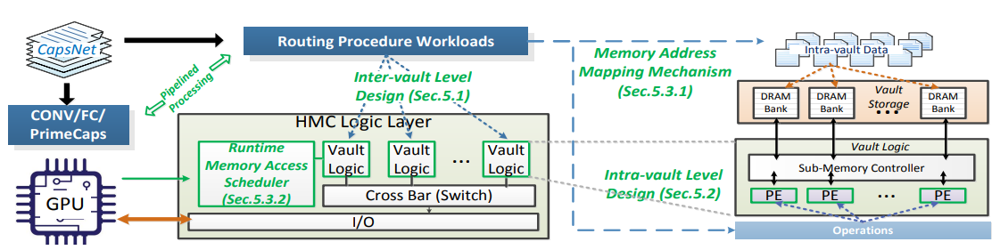 |
[HPCA'20] "Enabling Highly Efficient Capsule Networks Processing Through A PIM-Based Architecture Design" 2020 IEEE International Symposium on High Performance Computer Architecture (HPCA), (Acceptance rate: 19.4%; This work tries to start some conversation on how we deal with these new types of hybrid network structures where not only 2D or 3D convolution poses as the most significant efficiency block. We are helping CapsuleNet actually scale and become hardware-friendly (via Processing-in-Memory).) Slides
|
 |
[ISCA'19] "OO-VR: NUMA friendly object-oriented VR rendering framework for future NUMA-based multi-GPU systems" Chenhao Xie, Xin Fu, Mingsong Chen, Shuaiwen Leon Song. In Proceedings of the 46th International Symposium on Computer Architecture (ISCA '19). (Acceptance rate: 16.9%; Investigating into what future chiplet-based cloud server system will look like to reach scalable parallel rendering efficiency via a new hardware-software co-design framework.) Viedo
|
| 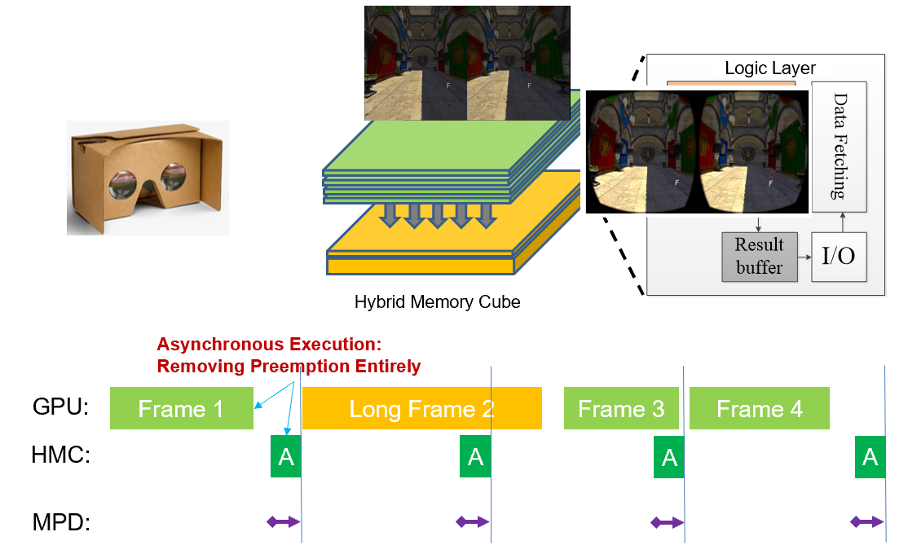 |
[HPCA'19] "PIM-VR: Erasing Motion Anomalies In Highly-Interactive Virtual Reality World with Customized Memory Cube" Chenhao Xie, Xingyao Zhang, Ang Li, Xin Fu, Shuaiwen Leon Song. In 2019 IEEE International Symposium on High Performance Computer Architecture (HPCA). (Acceptance rate: 19.7%; One of the first papers in the community identifying that state-of-the-art software-level reprojection optimization for commerical VR devices involuntarily causes significant hardware-level bottlenecks and motion anomalies.) Viedo
|
| 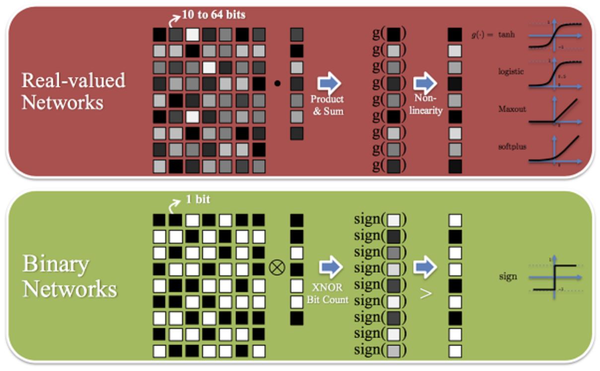 |
[SC'19] "BSTC: a novel binarized-soft-tensor-core design for accelerating bit-based approximated neural nets" Ang Li, Tong Geng, Tianqi Wang, Martin C. Herbordt, Shuaiwen Leon Song, Kevin J. Barker. In Proceedings of the International Conference for High Performance Computing, Networking, Storage and Analysis (SC '19). (Acceptance rate: 20.9%; Introducing the concept of software-based tensorcore for bit-level parallelism on manycore accelerators) Viedo
|
| 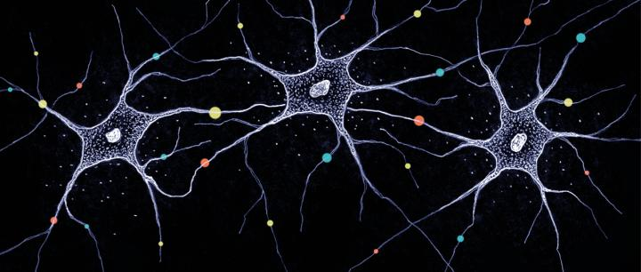 |
[PPoPP'18] "Superneurons: dynamic GPU memory management for training deep neural networks" Linnan Wang, Jinmian Ye, Yiyang Zhao, Wei Wu, Ang Li, Shuaiwen Leon Song, Tim Kraska. In Proceedings of the 23rd ACM SIGPLAN Symposium on Principles and Practice of Parallel Programming (PPoPP '18). (Acceptance rate: 20%; GPUs'memory are too small to have balanced efficiency matching with powerful cores when handling training for large non-linear networks. SuperNeurons helps users tackle this issue.)Viedo
|
 |
[HPCA'18] "Perception-Oriented 3D Rendering Approximation for Modern Graphics Processors." Chenhao Xie, Xin Fu, Shuaiwen Leon Song. In 2018 IEEE International Symposium on High Performance Computer Architecture (HPCA). (Acceptance rate: 19.7%; Connecting architectural bit stream and its manipulation to user perception impact.) Viedo
|
| 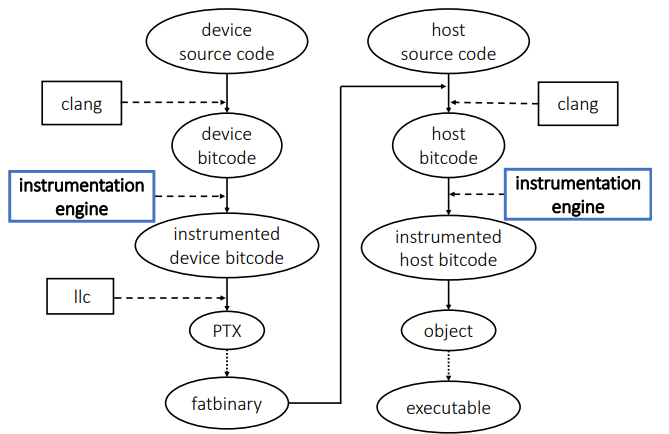 |
[CGO'18] "CUDAAdvisor: LLVM-based Runtime Profiling for Modern GPUs." Du Shen, Shuaiwen Leon Song, Ang Li, Xu Liu. In ACM International Symposium on Code Generation and Optimization (CGO).
|
| 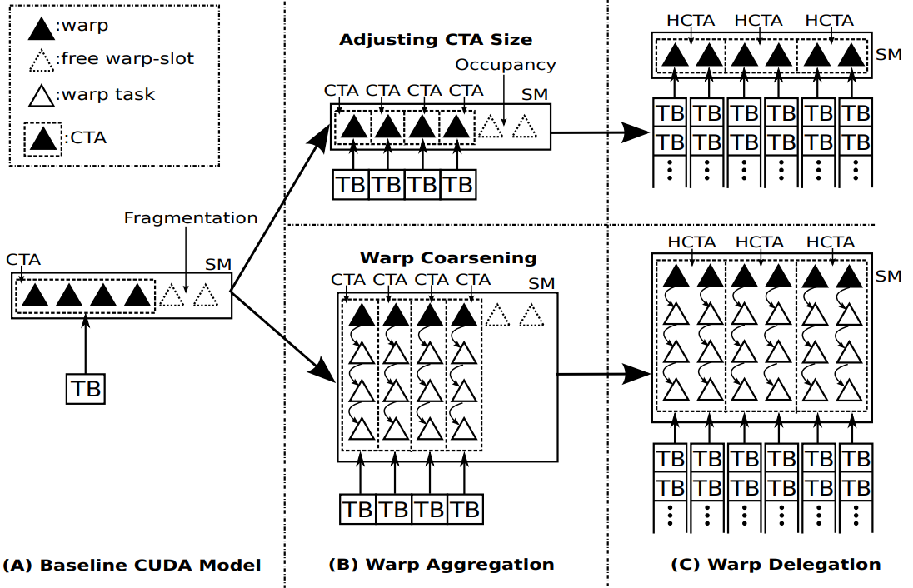 |
[ICS'18] "Warp-Consolidation: A Novel Execution Model for GPUs." Ang Li, Weifeng Liu, Linnan Wang, Kevin Barker, Shuaiwen Leon Song. In 32nd ACM International Conference on Supercomputing (ICS'18). (A new GPU programmming model for sychronizaton-critical applications).
|
| |
[TACO] "NUMA-Caffe: NUMA-Aware Deep Learning Neural Networks." Probir Roy, Shuaiwen Leon Song, SRIRAM KRISHNAMOORTHY, Dipanjan Sengupta, Xu Liu. In ACM Transactions on Architecture and Code Optimization (TACO).
|
 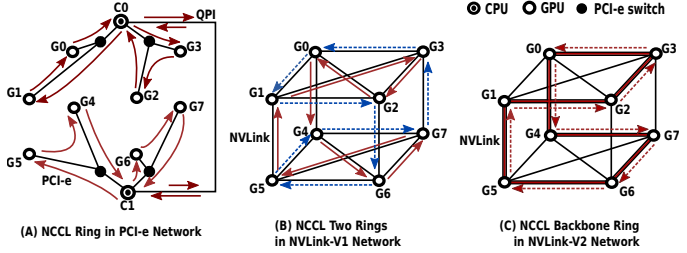 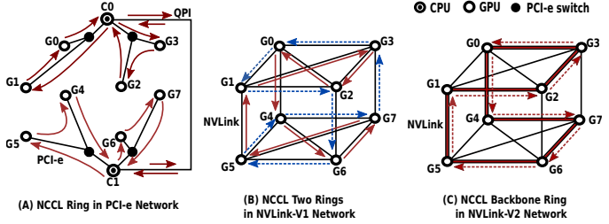 |
[TPDS] "Evaluating Modern GPU Interconnect: PCIe, NVLink, NV-SLI, NVSwitch and GPUDirect." Ang Li, Shuaiwen Leon Song, Jieyang Chen, Jiajia Li, Xu Liu, Nathan R. Tallent, Kevin J. Barker. In IEEE Transactions on Parallel and Distributed Systems (TPDS). [IISWC'18, Best Paper Finalist] "Tartan: Evaluating Modern GPU Interconnect via a Multi-GPU Benchmark Suite." Ang Li, Shuaiwen Leon Song, Jieyang Chen, Jiajia Li, Xu Liu, Nathan R. Tallent, Kevin J. Barker. In 2018 IEEE International Symposium on Workload Characterization (IISWC). |
| 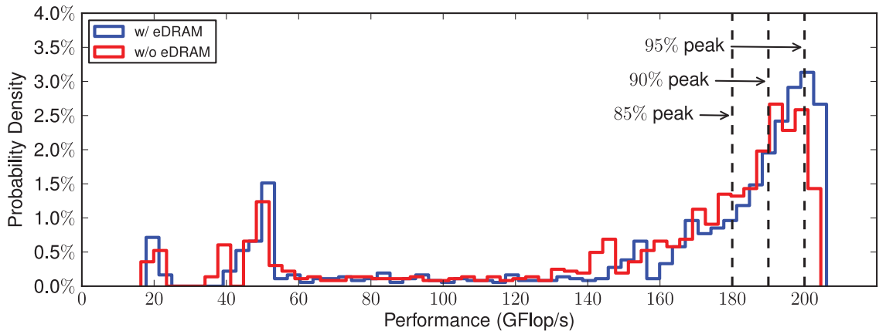 |
[SC'17, Best Paper Finalist, DoE Research Highlight article] "Exploring and analyzing the real impact of modern on-package memory on HPC scientific kernels." Ang Li, Weifeng Liu, Mads Ruben Burgdorff Kristensen, Brian Vinter, Hao Wang, Kaixi Hou, Andres Marquez, Shuaiwen Leon Song. In Proceedings of the International Conference for High Performance Computing, Networking, Storage and Analysis (SC '17). (Acceptance rate: 61/327=18.6%; First research investigating performance impact of introducing on-package memory into memory heriachy on a large spectrum of fundamental HPC scientific kernels and provide formalized modeling scheme for easy performance analysis at large scale. It recieves SC'17 best paper finalist and DoE research highlight.)
|
| 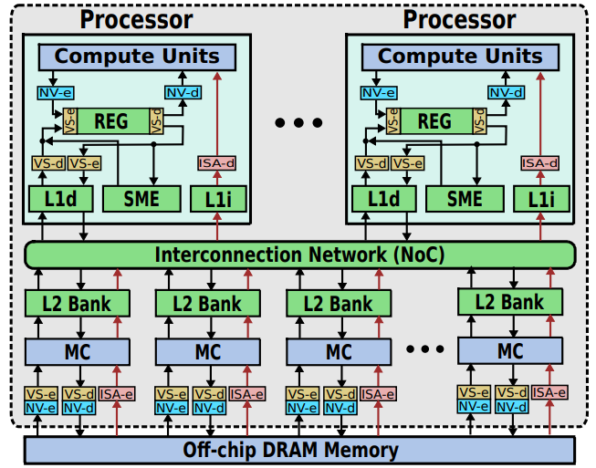 |
[MICRO-50] "BVF: enabling significant on-chip power savings via bit-value-favor for throughput processors." Ang Li, Wenfeng Zhao, Shuaiwen Leon Song. In Proceedings of the 50th Annual IEEE/ACM International Symposium on Microarchitecture (MICRO '17). (Acceptance rate:18.6%).
|
| 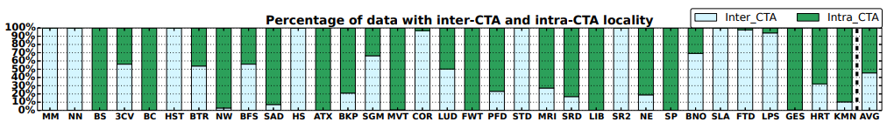 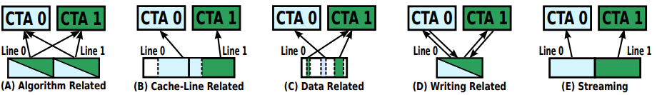 |
[ASPLOS-17, HiPEAC paper award]"Locality-Aware CTA Clustering for Modern GPUs." Ang Li, Shuaiwen Leon Song, Weifeng Liu, Xu Liu, Akash Kumar, Henk Corporaal. In Proceedings of the Twenty-Second International Conference on Architectural Support for Programming Languages and Operating Systems (ASPLOS '17). (Acceptance rate:17.4%) Viedo
|
| 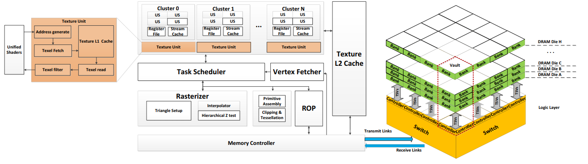 |
[HPCA'17]"Processing-in-Memory Enabled Graphics Processors for 3D Rendering." Chenhao Xie, Shuaiwen Leon Song, Xin Fu. In n 2017 IEEE International Symposium on High Performance Computer Architecture (HPCA). (Acceptance rate:21.6%; Using processing-in-memory technique along with graphics software pipeline re-design to accelerate modern rendering efficiency. )
|
 |
[ICS'16] "SFU-Driven Transparent Approximation Acceleration on GPUs." Ang Li, Shuaiwen Leon Song, Mark Wijtvliet, Akash Kumar, Henk Corporaal. In 30th ACM International Conference on Supercomputing (ICS). (Interesting concept about approximation units on modern many-core architectures and how they collaborate together in system to achieve dynamic performance-accuracy trade-offs.)
|
| |
[HPDC'16] "SMT-Aware Instantaneous Footprint Optimization." Probir Roy, Xu Liu, Shuaiwen Leon Song. In 25th ACM international Symposium on High-Performance and Distributed Computing (HPDC). (Identifying, debugging and fixing false sharing on multicore processors.)
|
| |
[ICS'15] "Locality-Driven Dynamic GPU Cache Bypassing." Chao Li, Shuaiwen Leon Song, Hongwen Dai, Albert Sidelnik, Siva Hari, Huiyang Zhou In 29th ACM International Conference on Supercomputing (ICS).
|
| |
[SC'15, Best Paper Finalist]"GraphReduce: processing large-scale graphs on accelerator-based systems." Dipanjan Sengupta, Shuaiwen Leon Song, Kapil Agarwal, Karsten Schwan. In Proceedings of the International Conference for High Performance Computing, Networking, Storage and Analysis (SC '15). (Acceptance rate:18.5%)
|
Recent Awards and Recognition
- 2020 Australia's Most Innovative Engineer Award
- 2020 Google cloud resource award for SystemML
- 2018 DOE Pathway to Excellence Research Award
- 2018 Department of Energy Research Spotlight
- 2018 Best paper finalist for IISWC
- 2017 IEEE TCHPC early career award in High Performance Computing
- Invited judge for R&D 100 award in 2017 and 2018
- 2017 HiPEAC Paper Award
- 2017 Best paper finalist for Supercomputing (SC'17)
- 2015 Best paper finalist for Supercomputing (SC'15)
- 2016 and 2017 DOE PNNL lab Outstanding Performance Award
- Paul E. Torgersen excellent research award
- Lawrence Scholar
Software Release
- Highly scalable BLAS on multi-GPU system (DOE HPDA Project): https://github.com/HPDA-2018-2019/Sparse-BLAS
- CUDAAdvisor: LLVM-based runtime profiling for modern GPUs (CGO'18): https://github.com/sderek/CUDAAdvisor
- CCProf: Lightweight Detection of Cache Conflicts (CGO'18): https://github.com/proywm/CCProf
- SuperNeurons (PPoPP'18): https://github.com/linnanwang/superneurons-release
- Tartan Multi-GPU benchmark (IISWC'19): https://github.com/uuudown/Tartan
Professional Services and Activities
- Area chair: Architecture (IPDPS 2021), Performance (ICPP2020)
- ACM ASPLOS'18, poster chair and ACM student research compeition (SRC)
- Publicity Chair, ACM HPDC, 2016, 2017, 2018 and 2019
- Publication chair, 2018 ACM International Conference on Supercomputing (ICS)
- Workshop chair and steering committee, International Workshop on Emerging Parallel and Distributed Runtime Systems and Middleware (IPDRM)
- Workshop chair, International workshop on High-Performance, Power-Aware Computing (HPPAC)
- Associate editor: IEEE transaction on sustainable computing.
- IEEE Transactions on Parallel and Distributed Systems (TPDS) review board
- ACM Transactions on Computer Systems (TOCS), expert reviewer
- Journal for Concurrency and Computation, Practice and Experience (CCPE), review board
- PC, 48th International Symposium on Computer Architecture (ISCA), 2021
- ERC, 27th IEEE international symposium on High-Performance Computer Architecture (HPCA),2021
- ERC, IEEE/ACM International Symposium on Microarchitecture (MICRO-53), 2020
- ERC, 47th International Symposium on Computer Architecture (ISCA), 2020
- ACM SIGPLAN Annual Symposium Principles and Practice of Parallel Programming (PPoPP), 2019˜2020
- ACM International Symposium on High-Performance Parallel and Distributed Computing (HPDC), 2016˜2018, 2020
- IEEE/ACM International Conference for High Performance Computing, Networking, Storage and Analysis (SC), 2015˜2017
- IEEE/ACM International Conference on Parallel Architectures and Compilation Techniques (PACT), 2019
- ACM International Conference on Supercomputing (ICS), 2017
- IEEE International Conference on Distributed Computing Systems (ICDCS), 2020
- IEEE International Parallel & Distributed Processing Symposium (IPDPS), 2016˜2018
- NSF proposal panelist, 2015
- R&D award judge, 2018˜2019
- ACM Transactions on Computer Systems (TOCS), 2020
- ACM Transactions on Architecture and Code Optimization (TACO), 2018
- IEEE Transactions on Parallel and Distributed Systems (TPDS), 2014˜2020
- IEEE Transactions on Computers (TC), 2015˜2016
- IEEE Transactions on Sustainable Computing, 2019˜2020
- Journal of Parallel and Distributed Computing - Elsevier (JPDC)
- The International Journal of High Performance Computing (IJHPCA)
- The Journal of Supercomputing Elsevier (JOS)
- Parallel Computing-Elsevier (ParCo)
Organizing Committee
Journal Editorial
Program Committee
Journal Invited Reviewer
Recent Talks
- "Designing Future Planet-Scale VR System”, Googel Research (Feb 2020) and Rice ECE (August 2019).
- "Unleashing the Power of Holistic System Design for Modern Emerging Workloads", Intel Research, University of Virginia, U of Minnesota, UC Irvine (ECE), U of Sydney, U of Pittsburgh, U of Connecticut, Rutgers U (ECE), UC Riverside, NUS, 2019.
- "Designing Future Non-Von Neumann Architectures for Big Data Analytics", multi-agency review, DOE/DOD HPDA project, 2018 and 2019.
- Invited to Microsoft Research Faculty Summit 2018.
- “Advanced HPC System Research: State-of-the-Practice and Future Roadmap”, invited Lecture, Bio-engineering Department, Duke University, Nov 2018.
- “Exploring and Analyzing the Real Impact of Modern On-Package Memory on HPCScientific Kernels”, conference talk, Supercomputing’18, Denver, Colorado, Nov 15th, 2017.
- “Binarzied Software Tensor Core”, invited talk, Microsoft Research, Redmond, WA, Nov 3rd, 2017.
- “Software-Hardware Co-Design for Future Complex HPC Architectures: DOE perspectives”, invited talk, Intel Research Lab, Hillsboro, OR, Oct 30th, 2017.
- Invited to Microsoft Research Faculty Summit 2017.
- “Whither Advanced GPU Research in HPC? Where We Are, Where We are Going”, Invited Speaker, Tsinghua University, CS department; Peking University, ECE department; Chinese Academy of Science, Institute of Computing Technologies, April 14th, 2017.
- “Locality-Aware CTA Clustering For Modern GPUs", conference talk, ACM ASPLOS’17, Xi’An, China, April 2017.
Publicity
- 2020 Australia's Most Innovative Engineer Award; University of Sydney News: https://www.sydney.edu.au/news-opinion/news/2020/07/06/engineers-australia.html.
- DOE featured research highlight: [Check the news!]
- Digital Trends (Boosting graphics performance through processing in-memory): [Check the news!]
- Yahoo Tech: [Check the news!]
- Bit-Tech: [Check the news!]
- PNNL featured research news: http://www.pnnl.gov/news/release.aspx?id=4385
- PNNL research highlight: Changing the game, http://www.pnnl.gov/science/highlights/highlight.asp?id=4495
- PNNL research spotlight: Improving computing system performance, http://www.pnnl.gov/science/highlights/highlight.asp?id=4238, March 2016.
- "Powering Down", article about my work on power management on large-scale system, published on DOE DEIXIS magazine featured article, [Check the news!], written by Monte Basgall.
- PNNL Science Research Highlight: Energy Star: Novel models of HPC systems depict the interplay between energy efficiency and resilience", Link: http://www.pnnl.gov/science/highlights ,2015.
- PNNL ACMDD staff award and honors: PNNL HPC Staff Take on Energy E.ciency, Resilience at scale", Link: http://www.pnnl.gov/science/highlights, 2015.
- PNNL ACMDD staff award and honors: PNNL HPC Staff research: Improving Energy, Performance Efficiency for High Performance Computing", Link: http://www.pnnl.gov/science/highlights, 2015.
- Current Magazine: \HPC system modeling: Depicting interplay between energy efficiency and resilience", June 2015 issue.
- InsideHPC: "PNNL looks at undervolting to meet exascale goals", written by Rich Bruecker: [Check the news!]
- HPC Wire Top Feature Article: "Tackling the Power and Energy wall for Future HPC Systems", [Check the news!], Dec, 2013.
Past and Current Sponsors and Collaborators


Contact
Room 438, School of
Computing
The University of Sydney
Camperdown NSW 2006, Australia
shuaiwen.song |at| sydney |
dot | edu | dot | au
+61 2 8627 9613